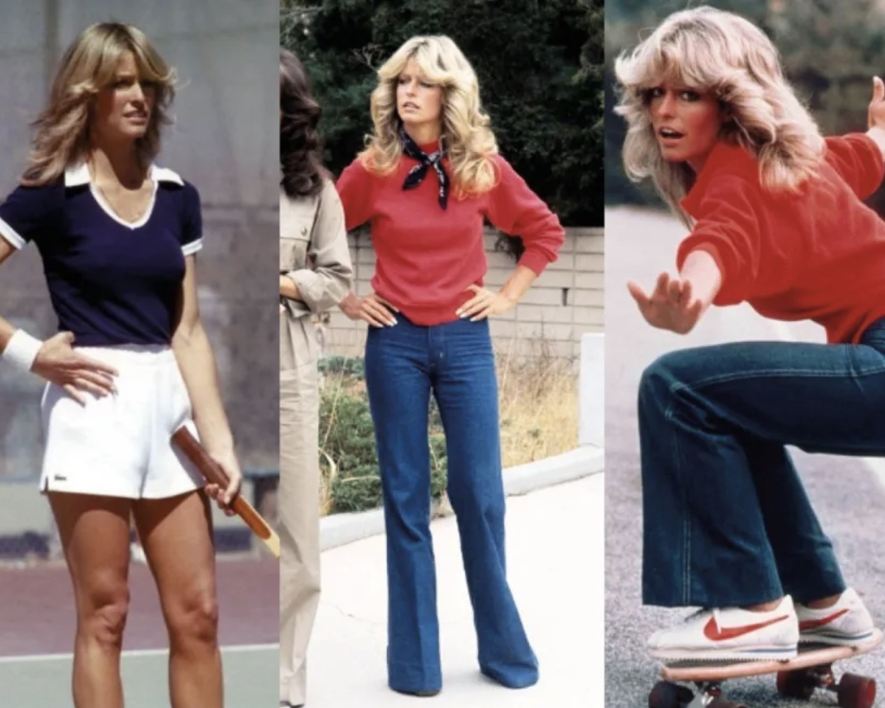
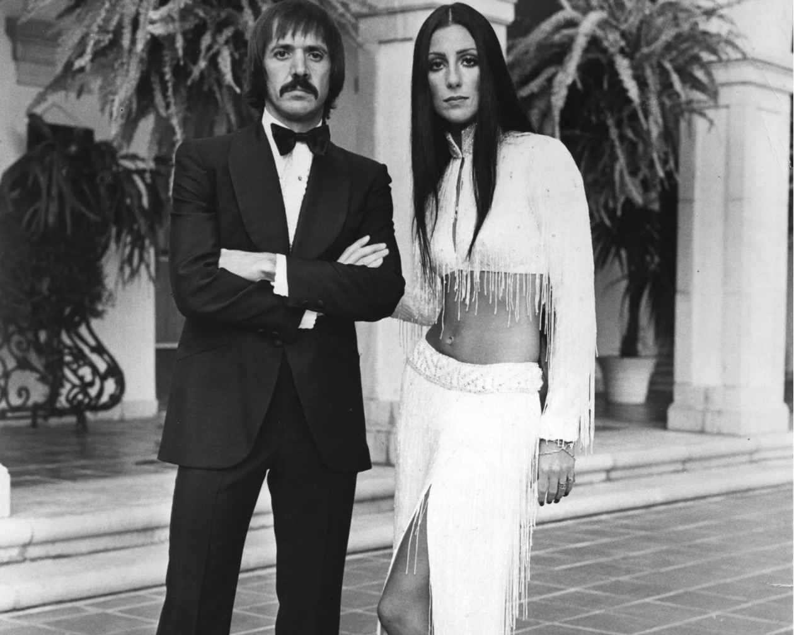
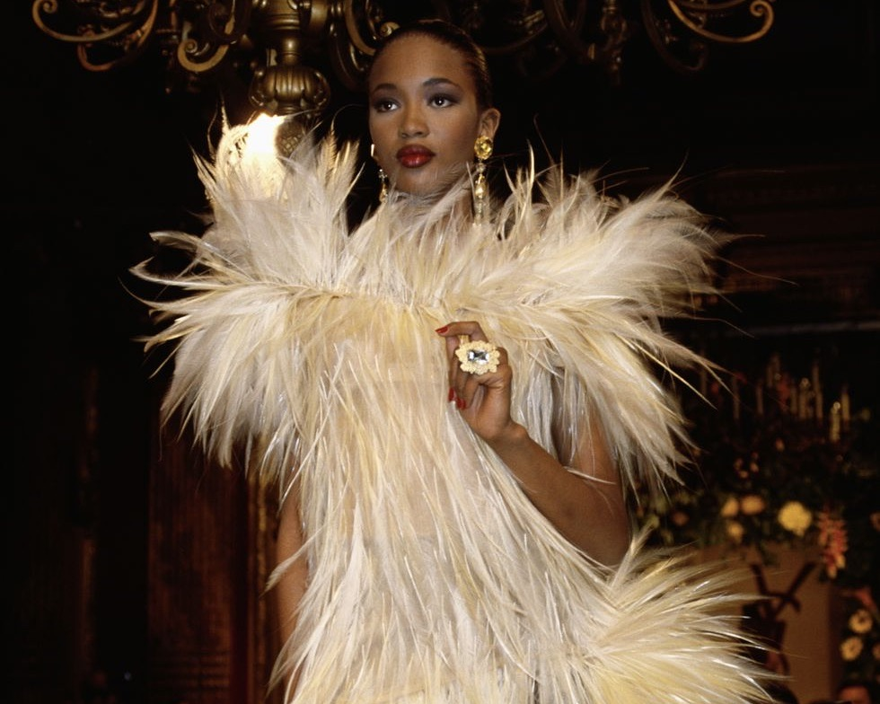
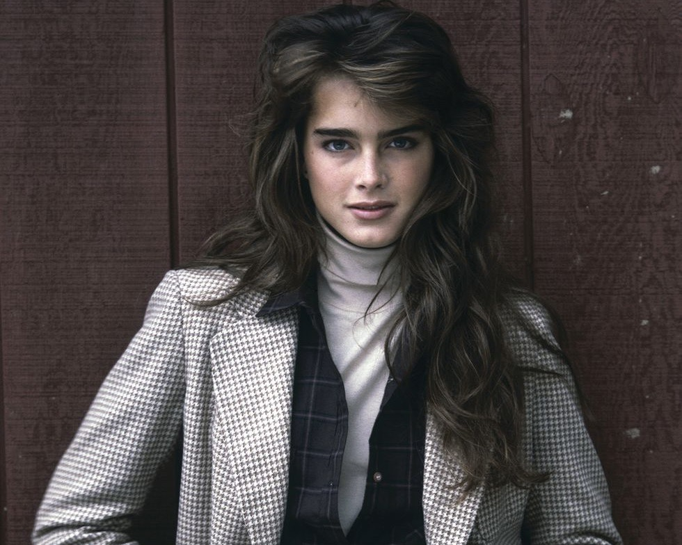
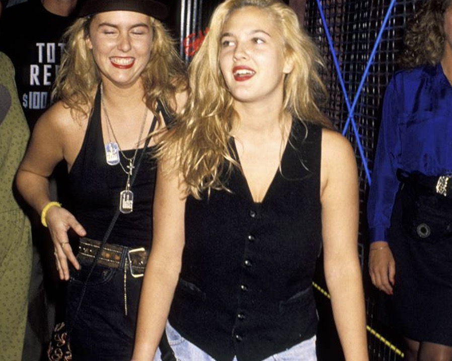
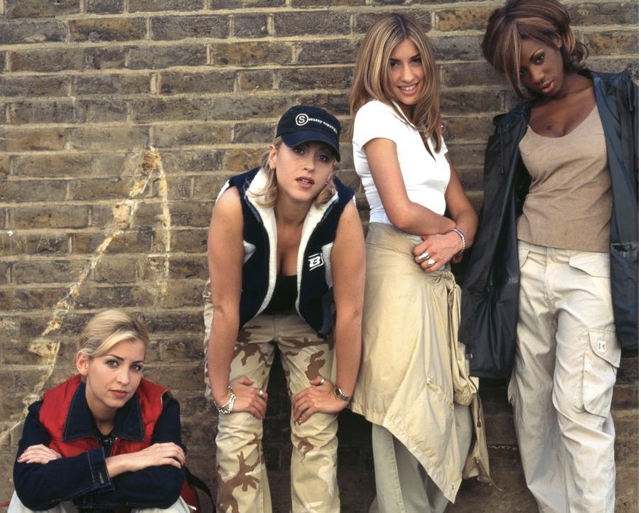
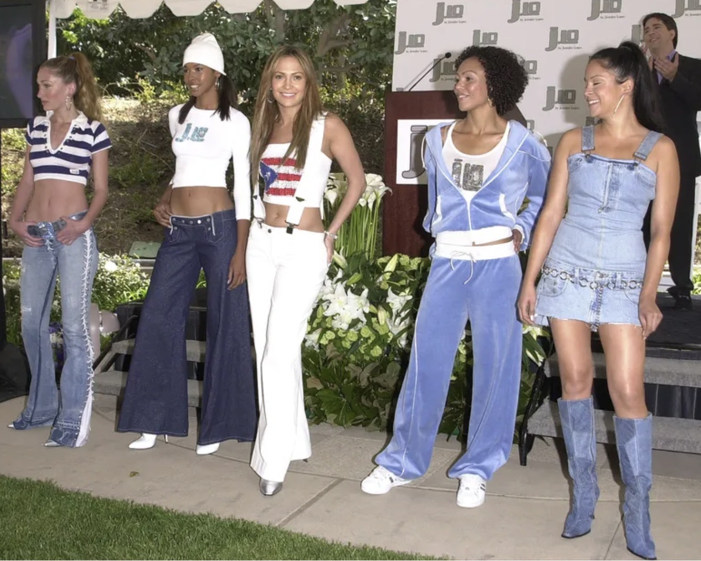
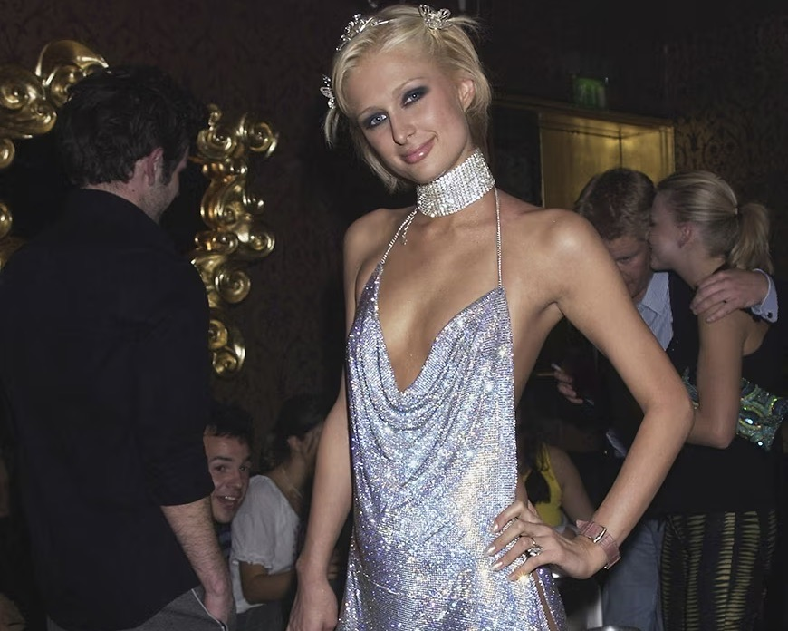

Our Story
Look Archive
Current Trends
Gallery
Subscribe
Look Gallery

Farah Fawcett in the 1970's.

Cher in the year 1970.

Naomi Campbell in 1987.

Brooke Shields in 1982.

Drew Barrymore in the 1990's.

All Saints group in the 1990's.

JLo in 2001.

Paris Hilton in 2002.